Sagittarius Zodiac Art Prints — The Full Collection
The Sagittarius zodiac art print collection from Built By Josh Studio includes 16 original digital prints, each designed to capture a different dimension of Sagittarius energy. Every piece starts with a creative vision and goes through multiple rounds of refinement before it's considered finished. The collection spans twelve distinct art styles — celestial, dark fantasy, watercolor, vintage posters, cyberpunk, gothic horror, minimalist, anime-inspired, hyper-realistic, oil painting, macabre horror, and silhouette illustration.
All prints are available as instant digital downloads from the Built By Josh Studio Etsy shop. Files are high-resolution (up to 6000×9000 pixels) and ready to print at home or at a local print shop. Prices range from $5.99 to $11.99 depending on whether a listing includes a single print or a bundled set.
Built By Josh Studio is a one-person creative studio based in Kansas producing original zodiac digital art across all 12 Western zodiac signs and the Chinese zodiac. Sagittarius season (November 22 – December 21) overlaps with holiday gift-giving, making these prints a strong option for both birthday and Christmas gifts.
What Makes Sagittarius, Sagittarius
Sagittarius is the ninth sign of the zodiac, spanning November 22 through December 21. It is a fire sign ruled by Jupiter — the planet of expansion, philosophy, and boundless optimism. Sagittarius is represented by the archer, a centaur drawing back a bow, aiming at something just beyond the horizon.
People born under Sagittarius are often described as adventurous, honest to a fault, and perpetually reaching for something bigger. They chase truth, freedom, and meaning with the same intensity other signs chase stability. Sagittarius energy is forward momentum — the arrow already in flight, the next destination already chosen before the last one's finished.
That restless, expansive energy defines this entire collection. Whether rendered in blazing sacred geometry, the cinematic wildfire of the dark fantasy series, or the untamed warmth of the watercolor prints — every Sagittarius piece is designed to feel like it's going somewhere. Nothing in this collection stands still.
Sagittarius Art Print Styles — Find Your Version
Every Sagittarius in this collection carries the same untameable energy, but no two prints express it the same way. Here's what's available across the full range of styles.
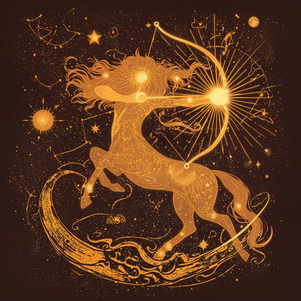
Celestial Collection
The signature Built By Josh Studio style. Blazing gold and amber tones with sacred geometry arcing outward like a drawn bow. This is celestial Sagittarius wall art at its most kinetic — the archer rendered in cosmic detail with Jupiter symbolism and expansive depth. The original series that set the zodiac catalog in motion.
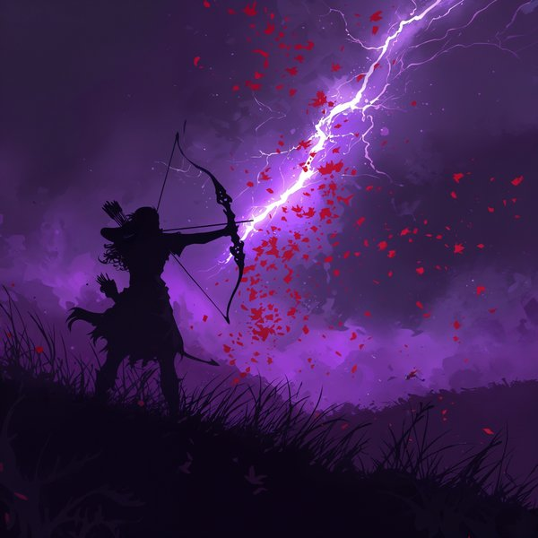
Dark Fantasy Series
Hyper-realistic and epic. These dark fantasy Sagittarius art prints feature mounted archers, wildfire plains, and mythic centaur warriors mid-charge. Cinematic scope and burning palettes dominate. Designed for anyone who wants their Sagittarius wall art to feel like the opening scene of a quest, not a decorative afterthought.
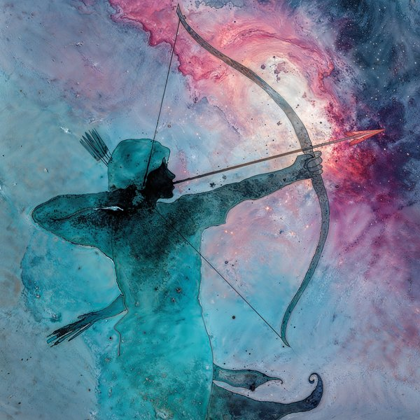
Watercolor Prints
Warm and untamed. These watercolor Sagittarius zodiac prints use amber, sunset orange, and wild gold washes that feel like they're still moving across the page. Loose and energetic — the kind of art that brings adventurous warmth into a room without being constrained by clean lines. Perfect for living rooms and creative spaces.
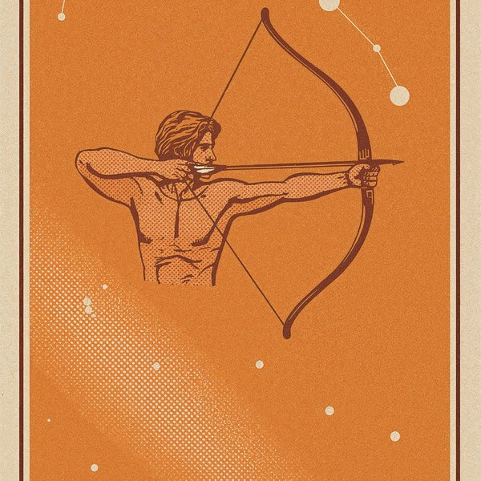
Vintage Posters
Classic vintage poster aesthetic. Adventurer's palette, printed-poster texture, and the open-road feel of a vintage travel poster. This vintage poster Sagittarius zodiac print captures the archer with the optimism and scope of framed mid-century wanderlust.
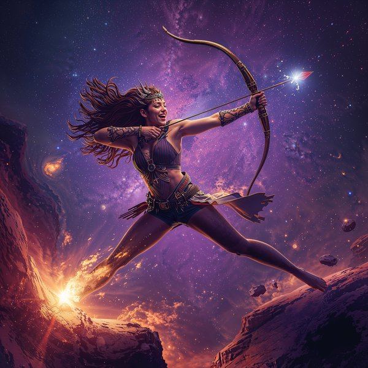
Cyberpunk Edition
The archer reimagined through electric circuitry and neon trajectory lines. Cyberpunk Sagittarius zodiac art for the sign that's always targeting something beyond the current reality. Blazing, futuristic, and aimed forward — designed for bold spaces that match Sagittarius energy at full volume.
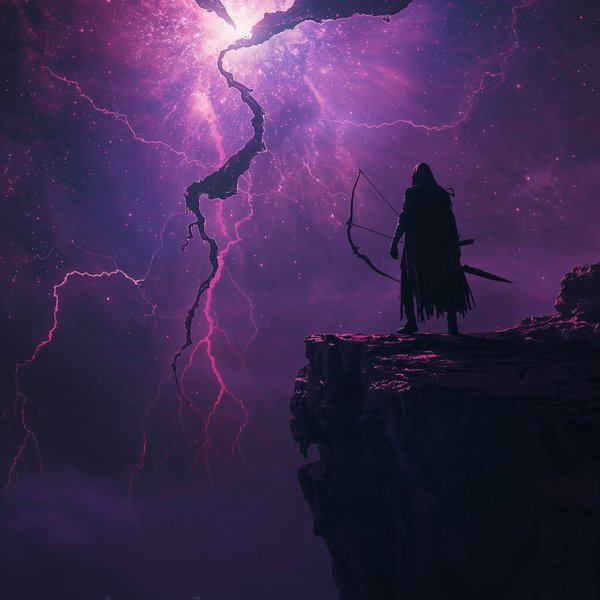
Gothic Horror
The hunt turned haunted. A blazing stag, cursed arrows, and a forest where the fire never stops burning. Gothic horror Sagittarius wall decor that takes the sign's relentless forward motion and imagines what happens when there's nowhere left to run. Wall art for someone who knows that every adventure has a dark chapter.
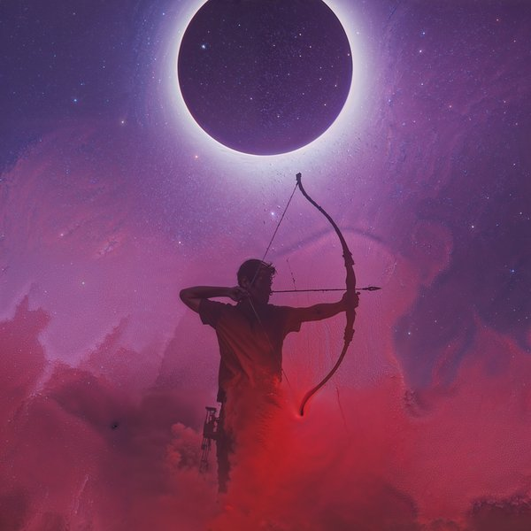
Minimalist Line Art
Clean trajectory, bow geometry, and nothing standing in the way. The archer stripped down to pure directional energy — aim and release, no clutter. Minimalist Sagittarius wall art for contemporary spaces, offices, and anyone who wants their sign on the wall with the same clarity the archer brings to the shot.
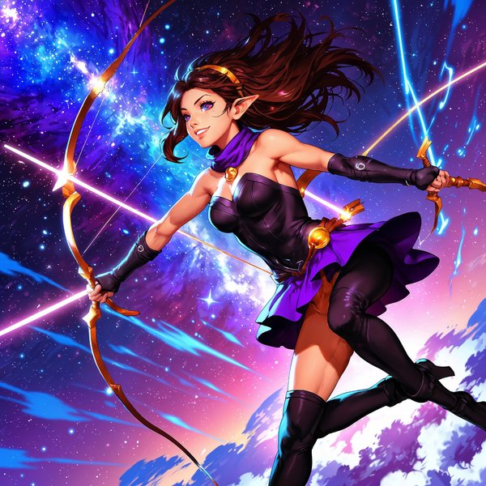
Anime / Illustrated
A flame-cloaked archer in full motion, rendered in dynamic Japanese-inspired illustration with blazing trajectory lines and wild energy. Anime Sagittarius zodiac art for collectors and fans of illustrated wall prints who want their sign channeled through a character that never stops moving forward.
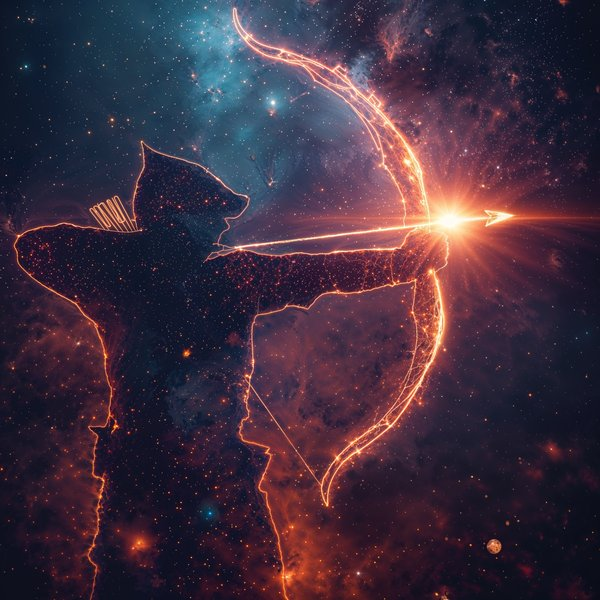
Hyper-Realistic
Photoreal portraiture, expansive cinematic lighting. The Sagittarius archer rendered with skin texture, motion, and open-sky presence. Hyper-realistic Sagittarius zodiac art for collectors drawn to portraiture quality.
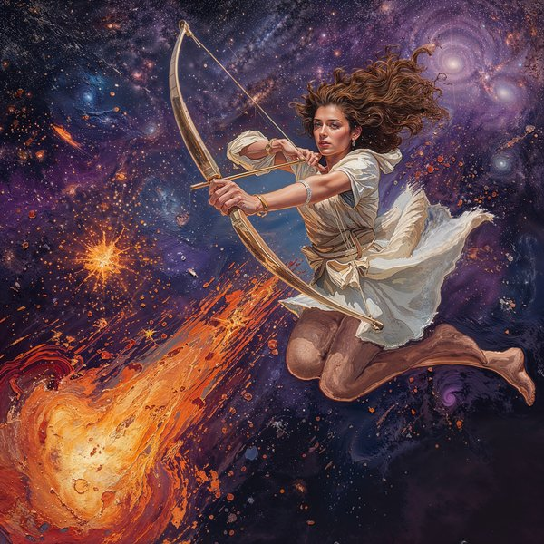
Oil Painting
Painterly brushwork with cosmic motion. Oil-painting texture applied to a Sagittarius archer mid-draw. Digital oil painting Sagittarius zodiac art for anyone drawn to painterly craft and adventurous atmosphere.
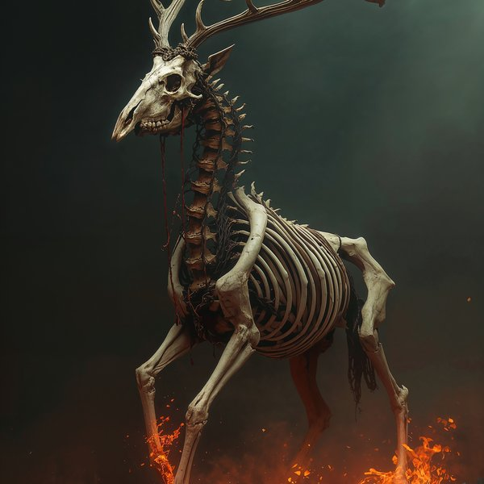
Macabre Horror
Horror with cosmic dread. A shadowed archer loosing arrows into crimson sky. Macabre Sagittarius wall art for horror collectors drawn to apocalyptic, mythic imagery.
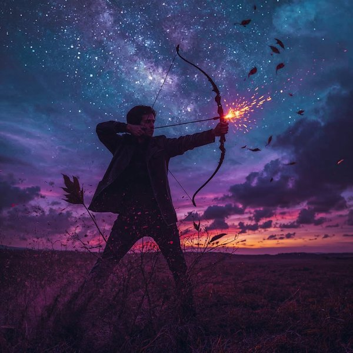
Silhouette
Archer silhouette against wide atmospheric sky. The figure reduced to pure contour, drawn and ready. Silhouette Sagittarius zodiac art for gallery walls that want kinetic, open-horizon iconography.
Who Buys Sagittarius Zodiac Art
This collection is for people who want their walls to reflect the same energy they bring into a room — expansive, unapologetic, and always aimed at something.
- Sagittarius (November 22 – December 21) looking for zodiac wall art that captures their adventurous, freedom-chasing energy — not a generic bow-and-arrow clip art graphic
- Anyone shopping for a Sagittarius birthday or holiday gift who wants something bold, personal, and visually alive — a Sagittarius gift idea that feels as big as the sign's personality
- Holiday shoppers looking for a meaningful December gift that goes beyond the generic — Sagittarius season overlaps Christmas, making zodiac art a personal alternative to standard presents
- Astrology enthusiasts building a zodiac gallery wall across multiple signs and visual styles
- Interior decorators and design-conscious buyers looking for warm, kinetic wall art with fire-sign energy and expansive composition
- Dark fantasy and horror art collectors drawn to the Blazing Stag and the gothic hunt pieces
- Travel and adventure decor fans looking for art that captures movement and wanderlust without being cliche
What's Included With Every Sagittarius Art Print
Every listing in the Sagittarius collection is a digital download. After purchase on Etsy, you get instant access to high-resolution image files — no shipping, no waiting, no physical product mailed to you.
Files are sized at up to 6000×9000 pixels, which means they print cleanly and sharply at standard frame sizes including 5×7, 8×10, 11×14, 16×20, and even larger formats depending on your printer. There is no pixelation or quality loss at these sizes.
Some listings include multiple art pieces bundled together as a set, which is why prices range from $5.99 to $11.99. Single-print listings are at the lower end; multi-print bundles are at the higher end.
All prints are designed to look good on a wall — not just on a screen. The color depth, contrast, and detail are optimized for physical printing.
Visit the Etsy shop for the most up-to-date pricing, sales, and discounts.